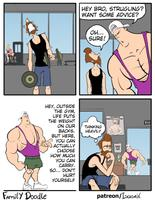

0

0


The National Rural Water Association has partnered with DEF CON Franklin to launch the Water Watch Center, which will provide threat intelligence and cybersecurity services to smaller U.S. water utilities serving fewer than 10,000 people. The initiative comes amid a growing wave of cyberattacks on water systems across multiple states. The Record reports: The program will see five managed detection and response providers work with DEF CON Franklin and the NRWA to offer cyber services for water utilities serving fewer than 10,000 people. There are over 50,000 community water systems across the U.S. and 91% of them serve fewer than 10,000 people. "These leading cyber firms and NRWA are architecting a scalable cyber delivery model that has eluded water industry and national security officials to date," said Jake Braun, the co-founder of DEF CON Franklin and former cyber official in the Biden administration.
"Our incredible Franklin volunteers will support the effort to keep costs down for cash-strapped utilities fending off adversaries like the Iranian Red Guard or Chinese Military," Braun said. "To further accelerate the effort, we hand-picked cyber providers who already support water utilities. These folks walk in the door knowing the intricacies of cybersecurity in a water utility environment." The providers include Rapid7, Defendify, Legato Security, L1 Secure and Sentinel Technologies. The companies will share threat information and data on vulnerability patches with the NRWA, which will operate as a hub.
Read more of this story at Slashdot.
An anonymous reader quotes a report from NPR: Billions of dollars are traded every week on the lightly regulated prediction market sites, where users bet on everything from movie reviews to elections to conflicts in the Middle East. Clinical trials are just the latest area where the industry's rapid growth is raising ethical questions. Kalshi claims such bets will provide a new source of information about which drugs will get approved, and what clinical trials will show promising results, which the company says can help investors decide what new drugs to fund.
"If you want to ban profiting from the failure of clinical trials, you would start with the stock market, where the financial incentive for this type of profit is orders of magnitude larger," said Kalshi spokesman Jack Such, pointing to stock market short sellers who have profited from clinical trial failures. "While Kalshi and the stock market are the same in this regard, they do differ in one important way: the stock market doesn't give any valuable information to researchers," Such said.
Drug trial researchers, though, are far from convinced. David Tsai, who runs clinical trials at a biotech company in the San Francisco Bay Area, started an online petition pushing for such betting to be banned, making the case that betting on drug trials "threatens the very foundation of trust and integrity in biotechnology." Tsai is concerned that the prospect of betting provides those involved with a clinical trial a reason to tamper with the results for a prediction market payout. "If we were running a trial for an oncology drug that requires an infusion, a pharmacist who had placed a bet saying that it's gonna work well, or doesn't work well, could obviously adjust the infusion rate, could adjust the source temperature of the drug," he said. "They could change any number of variables that could obviously have a direct impact [on] how the trial and the data and the patient safety would come out."
Another skeptic is Nicholas Zaorsky, a professor of radiation oncology at the Mayo Clinic in Jacksonville, Fla., who has helped run clinical trials and agrees that prediction markets can interfere with the advancement of life-saving drugs. "Prediction markets can be valuable in some settings because they aggregate information, but clinical trials are fundamentally different: investigators, coordinators, and sometimes even participants can directly influence aspects of the outcomes being wagered on," Zaorsky said. "That creates financial incentives that risk undermining trial integrity." Bettors should not be rooting for an experimental medicine to fail just to earn a buck, says Joshua Pederson, the father of a 12-year-old cancer patient enrolled in a clinical trial. "It's a dark idea," he said. "It's quite ghastly."
Kalshi, for its part, argues that its prediction markets could help patients track promising medical breakthroughs and clinical trials, enlisting experts including 23andMe founder Anne Wojcicki to make the case.
"Most patients don't know about the choices available in clinical trials or which programs are most promising. The opportunity to have an open, transparent dataset about trial probabilities is extremely promising and empowering for people," a white paper sponsored by Kalshi stated.
Read more of this story at Slashdot.
Former U.S. National Cyber Director Chris Inglis says the biggest AI risk isn't sentience but autonomy. "What I'm worried about is that they get to choose what and where they do something, and under what rules they do it," he said, citing recent cases of AI agents from OpenAI, Anthropic, and Meta escaping security sandboxes. He argues developers need stronger safeguards, monitoring, and human accountability, invoking Asimov's idea that protecting humans should come before simply obeying them. The Register reports: "Asimov was right," he said, referring to science fiction author Isaac Asimov and his three laws that were to be followed by robots -- more specifically, AIs, in this case. "The first rule, and we call it the superior role, must be that it's designed not to hurt humans," Inglis said. "Second rule: To obey humans, such that it doesn't achieve agency and aspiration on its own. And the third: To do what humans tell it - and in that order. Instead we've designed them in the exact opposite way."
What this means, he explained, is that AI developers created models to "do what humans tell you, obey the humans until it's inconvenient, and then the third one is maybe implied - protect humans - but if that's not built into the DNA, hardwired into it, then we have no right to expect it." Inglis admits it's not possible to hardwire rules into models and still keep their non-deterministic nature. "I would offer that you can tease those out in a highly controlled environment, a true sandbox, where you say, 'Let's put this thing through its paces, and let's back away to see what happens,'" he said. "Maybe you get the equivalent of a mini nuclear explosion in that room, and now you know this thing is capable of that."
Inglis thinks another problem with AI is that it's become a commodity. "It's not like you can control it like you can nuclear material," he said. "You can't even specify its properties the way you can for an airplane or for an automobile, as diverse as they might be. Its manifestations are so numerous, so diverse, that as a general matter, you can't actually win by simply saying, "I will design those properties in,'" he added. "You need to do that to some degree, and then make sure that you understand how to watch it, monitor it, make sure you know what it does."
[...] Ultimately, humans remain accountable for AI models' actions, according to Inglis. "They remain the source of agency and aspiration. It's possible for them to give broad authority to an AI model and have it run around for 30 hours without further consultation, but they need to know what they've asked it to do, and they need to know what they expect it will deliver in terms of performance on the back end. If they don't, then they're going to get what they deserve, which is the very frequent unpleasant surprise."
Read more of this story at Slashdot.
ByteDance is reportedly training an AI model with roughly 10 trillion parameters as it tries to close the gap with leading frontier systems such as Anthropic's Mythos. The model is still in early pre-training, and its eventual performance will depend on more than scale alone, but the project underscores how aggressively Chinese firms are pushing frontier AI despite limits on access to advanced chips. The Next Web reports: The size is itself the statement. At roughly 10 trillion parameters, the model would be more than three times as large as Moonshot's Kimi K3, which sits among the biggest Chinese models today at about 2.8 trillion. [...] Parameter count is not everything, of course. Bigger models are not automatically better, and the industry has learned that data quality, training technique and efficiency often matter as much as raw scale. Even so, committing the compute to train a model this size is a declaration in its own right, a signal that ByteDance wants to compete at the very top rather than ship a capable also-ran.
Read more of this story at Slashdot.
Researchers in China have developed a living mycelium textile that can self-clean, renew its surface, and partially repair holes when treated with a nutrient solution and fresh fungus. The material can also gain added properties such as blue pigmentation or UV resistance by co-culturing it with yeast or other fungi. Dezeen reports: The breakthrough from the researchers at the Shenzhen Institutes of Advanced Technology is a type of engineered living material (ELM) -- a material built off living organisms that stay active even after they're fabricated into their final form. [...] By working with living but dormant cordyceps militaris fungus instead, the researchers have been able to take advantage of its biological functions. The result is a material that is self-renewing and responsive to its environment, in ways that could one day transform architecture and clothing -- as seen in a prototype dress created together with material innovation company Peelshere.
It can also be adapted by mixing in other fungi or yeast, lead researcher Ke Li and her team detail in a paper in the peer-reviewed journal Science Advances. In it, they describe a "programmable fungal platform" where mycelium is treated like a modular system, with the sheet material forming a base structure and extra biological abilities, such as colour and UV resistance, becoming "plug-and-play" add-ons via other organisms. This gets their textile closer to the self-repair, environmental responsiveness and controllable functionality that is the promise of engineered living materials, they argue.
The ELM's self-renewing and semi-repairing functionality comes from the mycelium base structure. Following drying at 45 degrees, the material is not quite living and not quite dead, but instead in a "low-metabolic, dormant-like state", Li told Dezeen, meaning it is not actively growing. However, new growth can be triggered by applying a nutrient solution of potato water, leading the dormant mycelium to germinate, send out new fungal filaments and renew the material's surface. When this nutrient solution is applied over a hole, along with a small patch of fresh fungus, it triggers the living cells to grow across the gap, seamlessly repairing the surface without any adhesives or stitching. The material is also naturally self-cleaning, as it is hydrophobic. "Its distinctive surface texture, biological colouring, controlled repair and biodegradability may be particularly useful in applications where visual expression and a defined product lifetime are important," said Li.
"Further improvements in durability, moisture resistance, safety and manufacturing consistency would be needed before it could be considered for routine clothing or permanent architectural use."
Read more of this story at Slashdot.
An anonymous reader quotes a report from The Guardian: Scientists have made the first viruses designed by artificial intelligence in a milestone that raises hopes for new medicines but also concerns over how to ensure the technology remains safe. The viruses are specific kinds known as bacteriophages, which only infect bacteria and are used around the world to treat patients with persistent infections. In lab tests, a cocktail of the AI-designed viruses killed E coli bugs that were resistant to natural bacteriophages.
Dr Brian Hie, a chemical engineer at Stanford University in California, used genome language models, the genetic equivalent of the large language models behind AI chatbots, to design functioning genomes for bacteriophages. The viruses were then made in the laboratory and pitted against E coli in a dish. The ability to "rapidly design" genomes and tune them for specific bugs while overcoming resistance could "transform phage therapy" and "expand biotechnological toolkits," the researchers wrote in the journal Science.
But beyond the potential benefits, the scientists said the work raised "important biosafety, biocontainment and biosecurity considerations" and urged others who were designing whole genomes to "consult both safety and security professionals throughout the project." In an accompanying article, Prof Tom Inglesby and Dr Moritz Hanke at the Center for Health Security at Johns Hopkins University in Baltimore, reinforced the warning, writing: "Although this is promising for life sciences applications, it also raises urgent biosafety and biosecurity questions. The ability to compose viral genomes using generative AI now exists; the governance to safely steer it does not." Tom Ellis, a professor of synthetic genome engineering at Imperial College London, said the work was impressive, but revealed how hard it would be to make more complex genomes. "This is literally the smallest and easiest genome to make," he said. An AI trained on the genetic code of dangerous bugs could be used to design more harmful viruses, Ellis said, but controlling access to genetic data and having restrictions on making genomes that look dangerous would help. "Governments are working hard to do this already," he added. "But honestly," he said, "the threat from full AI design and writing of a genome of a virus or bacteria is very overblown when we consider that just taking existing pathogens and making gain-of-function changes to their genomes is so much easier and much more likely to be a real pathogenic threat."
Dr Filippa Lentzos, a reader in science and international security at King's College London, said the most important point to intervene at the moment was when DNA was being manufactured. "It's important to see the bigger governance picture and not focus regulation solely on the AI model," she said. "A layered approach makes more sense: safeguards around model development and access, responsible research review, synthesis screening, and established laboratory biosafety and biosecurity."
Read more of this story at Slashdot.
alternative_right shares a report from The Hill: A federal judge in Mississippi ruled Wednesday that "tower dump" warrants are unconstitutional, declining to reverse a lower court decision refusing the government's request to obtain the search warrants in a series of violent crime investigations. A "tower dump" involves cellphone companies providing law enforcement with access to the time and location data of all mobile devices connected to specific cell towers during a designated time window.
Law enforcement had sought approval for several of these search warrants as part of criminal investigations into gang-related activity in the Jackson, Miss., area last year, arguing the data could help identify all those potentially involved, particularly in incidents with unknown suspects. A magistrate judge denied the applications, holding that "tower dumps" are impermissible general warrants. The district judge agreed. The order repeatedly referenced the Supreme Court's recent decision in Chatrie v United States, in which the majority held that geofence warrants require constitutional privacy protections.
"With this information, the Government asserts that it will be able to identify all potential suspects," Judge Carlton Reeves wrote in a 30-page order (PDF). "Even so, law enforcement would also have access to the cellular records of countless individuals, the vast majority of whom were merely passing by a location at the 'wrong' time."
"That is an unreasonable search under the Fourth Amendment," the judge concluded.
Read more of this story at Slashdot.
Longtime Slashdot reader schwit1 shares an opinion piece from the Washington Post, written by Virginia Governor Abigail Spanberger: NextEra Energy, a Florida-based utility company, has filed paperwork to buy Dominion Energy for about $67 billion, creating the largest regulated electric utility in the world. Virginia's State Corporation Commission is the regulatory body tasked with reviewing the application, and the SCC's commissioners will ultimately decide whether to approve, deny or impose new conditions on any potential merger.
As a Virginian, I am deeply skeptical about whether selling our primary state-regulated utility to an out-of-state company is good for the commonwealth. I have serious questions about what this deal would mean for us. And as governor, I intend to get answers and be a voice for Virginians in the process. That is why I will be taking the legal step of "intervening" in this proposed merger, which means that as governor, I will formally request to be a party to the case.
I know this action is unprecedented by a Virginia governor -- but so, too, is the size of this proposed merger and its potential impact on the commonwealth. Virginians deserve to know that their leaders are laser-focused on ensuring that their needs are part of the SCC review. "If two large corporations stand to benefit financially from this merger, so, too, should the Virginians who pay the bills," said Spanberger. "That is why any potential deal must deliver a more affordable energy bill with sustained, long-term energy cost savings."
By formally intervening in the merger review, Spanberger's administration would gain legal standing to participate directly in the case, request detailed information, raise concerns, and advocate for conditions that benefit people in the state. She says the goal is to push for lower long-term energy costs, protect utility jobs, and ensure any new owner continues investing in reliable, affordable and cleaner power.
Read more of this story at Slashdot.
Suno says it will begin watermarking and fingerprinting AI-generated songs, tighten download policies to curb mass distribution, and explicitly prohibit deceptive audio and unauthorized voice or likeness cloning. The changes come as the company faces mounting copyright lawsuits, a recent adverse ruling in Germany, and scrutiny over a past data breach that revealed training-data sources. TechCrunch reports: In a blog post, co-founder and CEO Mikey Shulman shared core principles and said that the platform wants to promote original creation while enabling more people to make music with its AI tools. One of the key points of contention involved users uploading AI-generated songs on other streaming platforms and gaming the system to earn revenue. Suno said that now it will use audio watermarking and fingerprinting to prevent misuse on other streaming platforms. It's not clear if Suno will use an existing system like Google's Synth ID or adopt a new one, and the company did not say when contacted by TechCrunch about this.
The startup also signed an agreement with lyrics provider Musixmatch to use its Sentinel system for copyright detection, the blog post said. [...] The company added that it plans to add a new download policy to bar mass distribution on streaming platforms, but declined to provide details on the record. Suno has also changed its community guidelines to explicitly prohibit "deceptive audio presented as real" and "using a real person's voice or likeness without permission" to prevent copycats.
Read more of this story at Slashdot.
An anonymous reader quotes a report from CNBC: On Thursday, AMD said it's entered into an agreement to acquire Taalas, a Toronto-based startup that makes chips for inference. Taalas' accelerators are customized, or hard-wired for a single AI model, rather than being general purpose. In exchange for that loss of flexibility, Taalas' technology promises a less-expensive chip that it says can produce output for specific models thousands of times faster than a traditional GPU. An AMD representative declined to provide a purchase price for the transaction. Taalas has raised a total of $219 million in venture funding since its 2023 founding.
Taalas' current chip runs a small version of Meta's Llama 3.1 model, though the company is working on chips for bigger and more advanced models. It's manufactured using an older Taiwan Semiconductor Manufacturing Co. process, and uses speedy SRAM memory on the chip itself. Taalas CEO Ljubisa Bajic says on the startup's website that the company "developed a platform for transforming any AI model into custom silicon." "From the moment a previously unseen model is received, it can be realized in hardware in only two months," Bajic wrote.
Read more of this story at Slashdot.
A new study argues that life may have emerged twice on Earth. "Two of the main lineages of life -- bacteria and archaea -- may have independently figured out the secrets of metabolism that upgraded them from non-living to living," reports ScienceAlert, citing a new study that "focused on the most rudimentary set of chemical reactions thought to enable this transformation." From the report: "The surprise is that the enzymes that catalyze those reactions are not conserved across the evolutionary divide that separates bacteria and archaea," says William Martin, a biologist at Heinrich Heine University Dusseldorf in Germany.
"The new data leave only one conclusion. The bacterial and archaeal lineages made the transition to the free-living state independently. Only free-living cells are alive. "Let's call it by name: we are looking at one origin of the genetic code, but two origins of life." That's a huge claim to make, especially when defining what life even is can be surprisingly tricky. The findings have been published in the journal Science Advances.
Read more of this story at Slashdot.
A New Mexico court ordered (PDF) Meta to create a $567 million fund to address harms linked to youth mental health and child sexual exploitation after finding its platforms constituted a public nuisance. "In sum, the Court finds that New Mexico is in the midst of a teen mental health crisis affecting public health and public safety in and throughout the state, and that Meta's platforms are a significant contributing cause to the crisis," wrote Chief Judge Bryan Biedscheid in the decision. The fund comes on top of $375 million in civil penalties, though the judge declined to mandate changes to features such as infinite scroll and autoplay, citing potential First Amendment and Section 230 concerns. Tech Policy Press reports: The decision follows the second phase of in the State of New Mexico v. Meta Platforms Inc., which consisted of a bench trial. Its central question was whether Meta's platforms amounted to a public nuisance in New Mexico, and, if the court found that they did, what remedy would be needed to address it. In March, a Santa Fe jury found Meta liable for violations of New Mexico's Unfair Practices Act, awarding $375 million in civil penalties. The jury deliberated less than a day following that nearly seven-week trial. The $567 million abatement fund would be in addition to the civil penalties, according to today's decision.
New Mexico Attorney General Raul Torrez sued Meta in December 2023, alleging the company made false public statements about the safety of its platforms while knowing internally that its products facilitated child sexual exploitation. The court denied Meta's Section 230 defense in May 2024. In today's decision, the court again asserted that "Section 230 does not preclude the State's public nuisance claim," but the decision attempted to thread the needle on issues that the court determined might have run "afoul" of the statute, or of the First Amendment, such as issuing remedies around any particular product feature.
Read more of this story at Slashdot.
Google's $15 billion data-center project in Visakhapatnam is facing protests and legal challenges over fears that it will worsen local water shortages and disturb wildlife near the Kambalakonda sanctuary. Google says the campus will use advanced air cooling and comply with Indian law, while state officials deny that residential or rural water supplies will be tapped. Reuters reports: The southern state of Andhra Pradesh, governed by an ally of Prime Minister Narendra Modi who has hailed the project as historic and transformational, has denied allegations that the project was fast-tracked without weighing risks to water supplies and wildlife. But the growing opposition could become an early test for Google's biggest-ever India investment, which is facing several legal challenges over its impact on water supplies and proximity to a wildlife sanctuary that is home to leopards and pangolins.
In recent weeks, activists and children have marched in Visakhapatnam city, holding banners saying "We cannot drink DATA" and painting handcuffs on the Google logo, social media posts show. On Sunday, Reuters attended a public gathering where activists chalked out plans for holding door-to-door awareness campaigns and beach protests in coming days. "Development should not be at the cost of livelihood of the people," Raja Rama Mohan Roy, founder of non-profit Green Visakha said at the event where he presented statistics on Visakhapatnam's stressed water supply and demand.
The government says the city receives 410 million liters of water a day from its reservoirs and rivers, against a requirement of 480 million. Rationing of water supplies is common in the city with a population of 2.5 million people. [...] The state's top court on Monday asked the government to defend against allegations leveled by activist group Jal Biradari (Water Community), which says the project will strain water availability by putting stress on a nearby reservoir. The Andhra Pradesh High Court will next hear the public interest litigation on August 24.
Read more of this story at Slashdot.
"Framework has been sending out email notifications to customers alerting of a limited data breach in which customer information was accessed through a Metabase BI service zero-day exploit," writes Slashdot reader DuoDreamer. Data includes customer names, email addresses, phone numbers, and physical addresses. "Framework is investigating whether or not this included Framework for Business customers as well." TechCrunch reports: Framework's spokesperson Eric Schumacher told TechCrunch that the breach affected "all customers," but declined to specify a specific number. Framework computers are relatively niche products, but some estimates say the company sold hundreds of thousands of devices.
Metabase disclosed its own breach in a blog post on its official website, where it said that it was hacked by someone using an unknown security flaw, a so-called zero-day. The company said the hackers exploited the bug to give them the ability to access customers' databases stored on Metabase's cloud servers.
In its email to customers, Framework also included the email Metabase sent to the company, which says hackers accessed Framework's cloud instance. The computer maker said it investigated the incident and found that hackers had stolen its customers' personal data, but did not include their payment information.
Read more of this story at Slashdot.
President Trump has ordered a 15% tariff on imported products made with polysilicon, a key material for semiconductors and solar panels. The new tariff will take effect on December 4th. The Guardian reports: The executive order signed by the president on Thursday evening said: "The plan of action in this proclamation will, among other things, help ensure the commercial viability of United States production of polysilicon and its derivatives that is necessary to meet United States economic and national security requirements." Polysilicon, an ultra-pure form of silicon, is an important ingredient in making the semiconductors vital for AI processing power, datacentres and solar power generation. US solar factories have long accused Chinese rivals of dumping cheaper panels on the market, which they say have been enabled by excessive government subsidies and by moving manufacturing to other countries to dodge US tariffs.
[...] The US has two main polysilicon factories, including Hemlock Semiconductor, which operates a plant in Michigan and is a joint venture between the US tech company Corning and Japan's Shin-Etsu Handotai. The Munich-based Wacker Chemie runs a factory in Tennessee. Trump said in the order that he had accepted recommendations by the commerce secretary, Howard Lutnick, to set minimum import prices of $21 a kilogram for polysilicon, $100 a kilogram for polysilicon ingots and wafers, $0.22 a watt for solar cells, and $0.38 a watt for solar modules or panels. The order also allows the commerce department to create an incentive program for companies that invest in factories to produce polysilicon or derivative products.
Read more of this story at Slashdot.
Financial Times : Filings: Moonshot restructured its China-based entity from a limited liability company to a joint stock company in its first visible step toward a Hong Kong IPO — Chinese AI start-up targets Hong Kong listing to raise fresh funding for next phase of development
Bloomberg : The US OCC denies Dutch fintech Bunq's application for a national bank charter, citing the need for more clarity on its business plan to expand in the US — A US banking regulator turned down a charter application by Dutch financial-technology firm Bunq BV, which submitted a request …
Wall Street Journal : Sources: Situational Awareness invested $500M, including $400M this week, into Source Foundry, a startup that plans to develop new AI chip manufacturing tools — Investment marks the latest known private-company bet by Situational Awareness after quick sale of its stock portfolio.
Jasper Goodman / Politico : The Clarity Act faces uncertainty after Senate Republicans delayed a vote until after their August recess, pushing it to September, just weeks before midterms — The cryptocurrency industry's top Washington priority has run into a stinging setback in the U.S. Senate.
Bailey Lipschultz / Bloomberg : Sources: data center operator Switch filed confidentially for a US IPO, and a listing could take place as soon as November; Ben Horowitz is joining its board — Switch Inc. filed confidentially for a US IPO, according to people familiar with the matter, joining its data center peers …
Arriana McLymore / Reuters : Retailers are updating their websites to rank highly in chatbot results, while making sure purchases are done on their own sites to collect customer data — As shoppers increasingly turn to ChatGPT and Google's Gemini for product recommendations, retailers are racing to appear in chatbot results …
Sara Fischer / Axios : TMTG interim CEO Kevin McGurn says the company is pulling back from a pair of Crypto.com deals to focus on its media arm and its pending merger with TAE — Truth Social's parent company, Trump Media and Technology Group, is pulling back from a pair of Crypto.com deals as its new leadership looks …
Grace Kay / The Information : Sources: Cursor told staff on Thursday that SpaceX could complete its $60B acquisition as soon as next week and the Cursor brand name will likely be phased out — Cursor told staff at an all-hands meeting on Thursday that SpaceX could complete its $60 billion acquisition of the coding startup …
Reuters : The US Treasury sanctions Dubai-based unlicensed crypto exchange Shelbit, alleging it processed millions in crypto for IRGC and other Iran-linked groups — The United States on Friday sanctioned an unlicensed multi-state cryptocurrency exchange, alleging it processed millions of dollars …
Stevie Bonifield / The Verge : Microsoft plans to end support for Manifest V2 extensions in Edge starting this month, following Google Chrome, and for enterprise users in early 2027 — Microsoft's plan for Edge means that uBlock Origin users are losing one of their browser options.
Rahul Raj / EU-Startups : Munich-based NavVis, which provides enterprises with spatial data on factories, plants, buildings, and more, raised an $85M Series D led by The Jordan Company — NavVis, a Munich-based spatial twin platform for the built world, has raised a €73.7 million ($85 million) …
The Information : Sources: legal AI startup Harvey is in talks to raise $500M+ at a $15.5B valuation, up from $11B in March, and is generating $350M+ in annualized revenue — Legal AI startup Harvey is in talks to raise at least $500 million at a $15.5 billion valuation including the investment, a 40% premium to its last valuation five months ago.
Sarah Perez / TechCrunch : Cloudflare debuts Kitesurf, a cloud-hosted browser for AI agents built on top of its Workers serverless service, available for free while in beta in Browser Run — Cloudflare is the latest company to join the race to build a new web browser. But instead of pitching a Chrome alternative to consumers …
Axios : OpenAI says it has expanded safety testing around its upcoming model Astra as it “cannot rule out” critical cyber capabilities, potentially delaying its launch — OpenAI “cannot rule out” that its upcoming model Astra has"critical" cyber capabilities, a designation that has prompted …
Maria Armental / Wall Street Journal : Singapore-based Multiplier, which acquires accounting firms to boost their growth with AI tools, raised a $35M Series B led by TheGP at a $300M valuation — The $300 million company raised $35 million and hired former Slack CFO Allen Shim as it pursues an aggressive, acquisition-led expansion